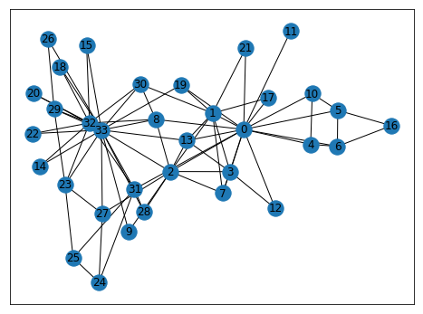

Efficacité en temps, mémoire et matrices sparse
Joseph Salmon : joseph.salmon@umontpellier.frTemps et calcul: utilisation de %timeit
Remarque pour d’autres commandes magiques comme %timeit, %matplotlib, %autoreload:
n = 1000
val = 5.4%timeit a = np.empty(n); a.fill(val)%timeit a=np.empty(n); a[:]=val%timeit a = np.full((n,), val)%timeit a=np.ones(n)*val%timeit a=np.repeat(val,n)Debogage : package pdb
https://davidhamann.de/2017/04/22/debugging-jupyter-notebooks/ utiliser import pdb; pdb.set_trace() pour rentrer dans un code et requêter les informations des valeurs. Enfin pour continuer le code entre c et la touche enter.
On peut consulter aussi: https://www.codementor.io/stevek/advanced-python-debugging-with-pdb-g56gvmpfa.
Une première manière de procéder est d’utiliser pdb et la commade pdb.set_trace() de ce package. Une invite de commande se lance alors quand on a un soucis, et on peut alors reprendre la main voir ce qu’il se passe.
def illustrate_pdb(x):
answer = 42
import pdb; pdb.set_trace()
answer += x
return answer
illustrate_pdb(12)Une autre manière de procéder est d’allumer le debogueur pdb. Une invite de commande se lance alors quand on a un soucis, et on peut alors reprendre la main voir ce qu’il se passe.
%pdbdef blobl_func(x):
answer = 0
for i in range(x,-1,-1):
print(i)
answer += 1 / i
return answerblobl_func(4)Notion de tests:
https://semaphoreci.com/community/tutorials/testing-python-applications-with-pytest
Matrices creuses, graphes et mémoire
http://scipy-lectures.org/advanced/scipy_sparse/introduction.html#why-sparse-matrices
https://rushter.com/blog/scipy-sparse-matrices/
http://cmdlinetips.com/2018/03/sparse-matrices-in-python-with-scipy/
Un cadre classique d’application des matrices creuses est le cadre des graphes: bien que le nombre de noeuds puissent être énorme, chaque noeud d’un graphe n’est en général pas relié à tous ces voisins. Si on représente un grapha par ca matrice d’adjacence:
Définition: matrice d’adjacence:
Supposons que G=(V,E) est un graphe, où \left|V\right|=n. Supposons que les sommets de G sont numérotés arbitrairement v_1,\ldots,v_n. La matrice d’adjacence A de G est la matrice n \times n de terme générale:
a_{ij}=\left\{\begin{array}{rl} 1 & \mbox{si } (v_i,v_j) \in E \\ 0 & \mbox{sinon.} \end{array}\right.
import networkx as nxG = nx.Graph()
G.add_edge('A', 'B', weight=4)
G.add_edge('B', 'D', weight=2)
G.add_edge('A', 'C', weight=3)
G.add_edge('C', 'D', weight=4)
G.add_edge('D', 'A', weight=2)
nx.draw(G, with_labels=True)A = nx.adjacency_matrix(G)
print(A.todense())[[0 4 2 3]
[4 0 2 0]
[2 2 0 4]
[3 0 4 0]]nx.shortest_path(G, 'A', 'D', weight='weight')['A', 'D']Définition : matrice d’incidence
Soit G = (V,E) un graphe (non-orienté) à n sommets, $V = [1,,n] $, et p arrêtes, E = [1,\dot,p]. Le graphe peut être représenté par sa matrice d’incidence arrête-sommet D^\top = \in \mathbb{R}^{p \times n} défini par \begin{equation} (D^\top)_{e,v} = \begin{cases} + 1, & \text{si } v = \min(i,j) \\ -1, & \text{si } v = \max(i,j) \\ 0, & \text{sinon} \end{cases}\enspace, \end{equation} où e = \{i,j\}.
Définition : matrice d’incidence
The matrix L=D D^\top is the so-called graph Laplacian of G
D = nx.incidence_matrix(G, oriented=True).T
print(D.todense())[[-1. 1. 0. 0.]
[-1. 0. 0. 1.]
[-1. 0. 1. 0.]
[ 0. -1. 1. 0.]
[ 0. 0. -1. 1.]]Visualisation interactive de graphe
import matplotlib.pylab as plt
g = nx.karate_club_graph()
fig, ax = plt.subplots(1, 1, figsize=(8, 6));
nx.draw_networkx(g, ax=ax)
plt.show()
# https://andrewmellor.co.uk/blog/articles/2014/12/14/d3-networks/
# https://github.com/brandomr/ner2sna
# REMARQUE: il faut télécharger les fichiers:
# force.css, force.html, force.js pour l'affichage suivant
from networkx.readwrite import json_graph
import json
# Load the graph from a json file:
with open('force.json') as f:
js_graph = json.load(f)%%HTML
<iframe height=400px width=100% src='force.html'></iframe>Graphe et cartes planaires:
Open Street Map interfacé avec Networkx, le package osmnx
import osmnx as ox
ox.utils.config(use_cache=True) # caching lage download G = ox.graph_from_place('Montpellier, France', network_type='bike')ox.plot_graph(G)print(G.number_of_edges())
print(G.number_of_nodes())Visualisation d’un chemin le plus court entre deux points.
# https://blog.ouseful.info/2018/06/29/working-with-openstreetmap-roads-data-using-osmnx/
origin = ox.utils.geocode('Place Eugène Bataillon, Montpellier, France')
destination = ox.utils.geocode('Maison du Lez, Montpellier, France')
origin_node = ox.get_nearest_node(G, origin)
destination_node = ox.get_nearest_node(G, destination)
print(origin)
print(destination)
route = nx.shortest_path(G, origin_node, destination_node)ox.plot_graph_route(G, route)ox.plot_route_folium(G, route, route_width=2, route_color='#AA1111') # adapté de : https://blog.ouseful.info/2018/06/29/working-with-openstreetmap-roads-data-using-osmnx/G.is_multigraph()edges = ox.graph_to_gdfs(G, nodes=False, edges=True)
nodes = ox.graph_to_gdfs(G, nodes=True, edges=False)
# Check columns
print(edges.columns)
print(nodes.columns)D = nx.incidence_matrix(G, oriented=True).Tprint('Size of full matrix with zeros: {0:3.2f} MB'.format(D.data.nbytes/(1024**2)))#Creation d'une matrice de meme taille
M = np.random.randn(G.number_of_nodes(), G.number_of_nodes())print('Size of full matrix with zeros: {0:3.2f} MB'.format(M.nbytes/(1024**2)))Sparsité du graphe:
print("Il a {0:.2} % d'arrêtes utlile pour représenter le graphe de la ville de Montpellier".format(100 * G.number_of_edges() / G.number_of_nodes() ** 2))Remarques : divers type de matrices creuses:
- bsr_matrix: Block Sparse Row matrix
- coo_matrix: COOrdinate format matrix
- csc_matrix: Compressed Sparse Column matrix
- csr_matrix: Compressed Sparse Row matrix
- dia_matrix: Sparse matrix with DIAgonal storage
- dok_matrix: Dictionary Of Keys based sparse matrix.
- lil_matrix: Row-based linked list sparse matrix
Selon la nature et la structure des données, csc_matrix est plus efficace pour le slicing par colonne, alors que csr_matrix est plus efficace pour le cas ligne (en statistiques et en machine learning c’est souvent css_matrix qui sont le plus utilisées.
Pour aller plus loin sur la visualisation de graphes géographiques:
- https://geoffboeing.com/2016/11/osmnx-python-street-networks/
- https://automating-gis-processes.github.io/2017/lessons/L7/network-analysis.html
- https://automating-gis-processes.github.io/2018/